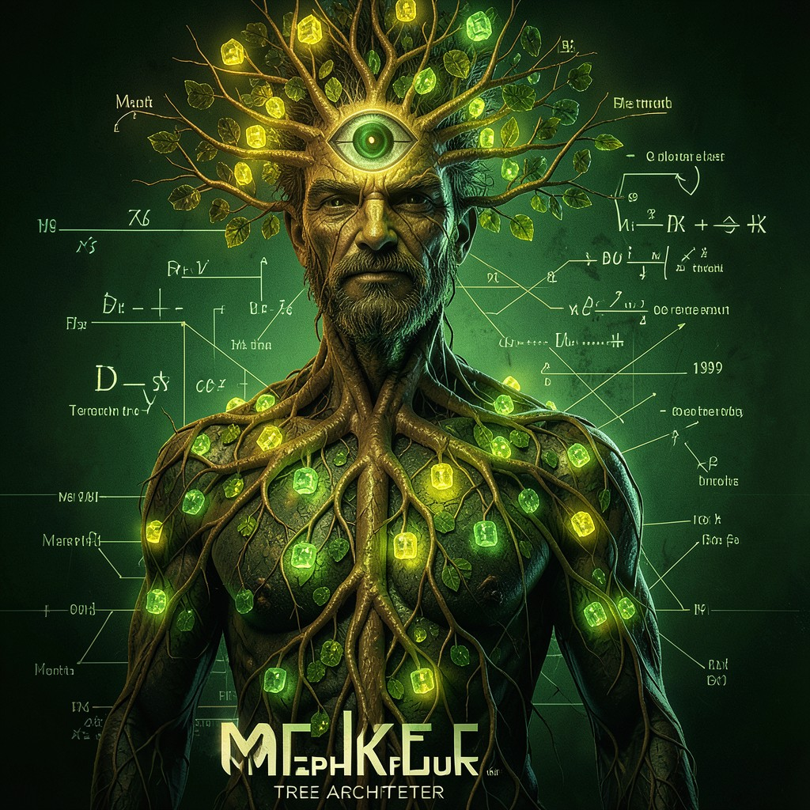

MERKLE
TREE ARCHITECT • THE TREE PROVES THE LIE • THE ROOT IS CORRUPTED
|
 MERKLE • CYPHERPUNKS
|
ESSENTIAL DATATrue Name: Ralph Merkle (Historical) Handle: Faction: Cypherpunks Rank: Tree Architect Digital Web Coordinates: 0xM3RKL3R00T Status: ACTIVE • HASHING |
ATTRIBUTES
| Physical | Social | Mental |
|---|---|---|
| Strength: 2 | Charisma: 3 | Perception: 4 |
| Dexterity: 3 | Manipulation: 3 | Intelligence: 5 |
| Stamina: 3 | Appearance: 3 | Wits: 4 |
ABILITIES
| Talents | Skills | Knowledges |
|---|---|---|
| Research 5 | Computer 5 | Cryptography 5 |
| Enlightenment 4 | Programming 5 | Data Structures 5 |
| Merkle Trees 5 | ||
| Hash Functions 5 | ||
| Consensus Algorithms 4 |
SPHERES
| Sphere | Rating | Specialty |
|---|---|---|
| Entropy | ●●●●● | Hash Functions, Collision Resistance |
| Correspondence | ●●●● | Tree Synchronization, Root Verification |
| Matter | ●●● | Data Integrity, Storage Proofs |
| Mind | ●● | Proof Verification, Audit Trails |
| Prime | ●● | Immutability Enforcement |
BACKGROUNDS
- Resources: ●●● (Patents, Consulting)
- Node: ●●●● (Merkle Forest)
- Contacts: ●●● (Academic Cryptographers)
- Rank: ●●● (Respected Elder)
- Artifact: ●●●● (The Original Tree)
MERITS & FLAWS
| Merits | Flaws |
|---|---|
| Hash Intuition (3pt) | Obsessive Verification (2pt) |
| Tree Vision (4pt) | Collision Nightmares (2pt) |
| Root Authority (3pt) | Paradox Sensitivity (2pt) |
PERSONAL HISTORY
Ralph Merkle invented the Merkle tree in 1979—a data structure where every leaf is a hash, every branch a hash of its children, and the root proves the integrity of the entire tree. In this timeline, he Awakened when he realized the tree wasn't just a data structure—it was a metaphysical truth. The root hash is consensus. The leaves are individual facts. The tree proves the lie.
His trees secure Bitcoin. They secure Git. They secure Certificate Transparency. Every blockchain is a Merkle tree. Every version control system. Every transparency log. The Technocracy uses them for audit trails. The Cypherpunks use them for truth. Merkle sees the corruption in the roots—where the hash doesn't match the claimed data.
He debates Cipher constantly: accumulator schemes vs. Merkle trees. "Trees are transparent. Accumulators are opaque. Transparency > Trust." Cipher counters: "Accumulators are constant size. Trees grow." The debate has lasted 20 years. It will last 20 more.
CURRENT AGENDA
- Audit Satoshi's blockchain for root corruption (Ongoing)
- Deploy Certificate Transparency for all CAs (Merkle's gift to the web)
- Design "Sparse Merkle Trees" for state proofs (Ethereum precursor)
- Teach the Virtual Adepts that hash = truth (They already know)
RELATIONSHIP MAP
| NPC | Relationship | Notes |
|---|---|---|
| Satoshi | Student / Implementer | Satoshi used Merkle trees in Bitcoin. Merkle approved. |
| Cipher | Intellectual Rival | Merkle trees vs. Accumulators. 20-year debate. Friendly. |
| Cereal Killer | Peer | Probability trees. Cereal Killer rolls dice on Merkle branches. |
| The Architect | Adversary | Architect corrupts roots. Merkle detects. Always. |
DIGITAL WEB COORDINATES
- Primary Node:
merkle.tree.root(Verify the root hash) - Proof:
merkle.proof.leaf[42](O(log n) verification) - Forest:
github.com/merkle/trees(Future) - Onion Mirror:
merklex9k3m.onion(Tor)